Dự án 1: Hệ thống ETL cho AI Travel Chatbot
Kiến trúc Hệ thống
Hệ thống ETL bắt đầu với khối Extract nhằm thu thập dữ liệu qua API (HereMap Platform & OpenWeather API) và web scraping (từ Traveloka, Klook, VnExpress), sau đó phân loại và lưu trữ thành các tệp JSON/CSV theo từng thành phố. Khối Transform tiếp nhận dữ liệu thô để tiến hành làm sạch, chuẩn hóa, mã hóa, đồng thời áp dụng Fuzzy Matching để đồng nhất và tạo Vector Embedding. Tại khối Load, toàn bộ dữ liệu đã hoàn thiện được nạp vào cơ sở dữ liệu để tối ưu hóa khả năng truy vấn và hiển thị trực tiếp lên giao diện web.

1. Xây dựng quy trình thu thập dữ liệu


2. Xây dựng quy trình tiền xử lý dữ liệu


Thách thức lớn nhất
▸ GIẢI PHÁP: Xoay Chrome Profile, random độ trễ, giả lập cuộn/click tự nhiên. Lỗi ghi log để xử lý thủ công.
3. Quản lý & Thiết kế hệ thống lưu trữ dữ liệu
Quản lý dữ liệu crawling
Dữ liệu thô thu thập được sẽ lưu trữ tập trung tại GG Drive Desktop. Tại đây, dữ liệu được phân nhánh theo từng chủ đề cụ thể vào các thư mục riêng biệt (điểm đến, khách sạn, thành phố), mỗi thư mục chứa các tệp định dạng chuẩn JSONL hoặc CSV để tối ưu cho việc truy xuất và xử lý sau này.

Thiết kế database cho truy vấn & Chatbot
Thiết kế database được tối ưu với kiến trúc 3 nhóm bảng chính: • Session — Bảng chính lưu trữ ngữ cảnh hội thoại và ràng buộc đầu vào của người dùng. • Itinerary / Itinerary_Item — Chi tiết kết quả lịch trình do AI sinh ra, liên kết trực tiếp với Session qua khóa ngoại. • City / Hotel / Point — Kho thông tin thực thể gốc, là nguồn dữ liệu nền tảng cho toàn bộ hệ thống. Cấu trúc được phân rã qua các khóa ngoại để tối ưu hiệu suất query, tránh quét toàn bảng và đảm bảo tốc độ render dữ liệu cực nhanh cho chatbot.
